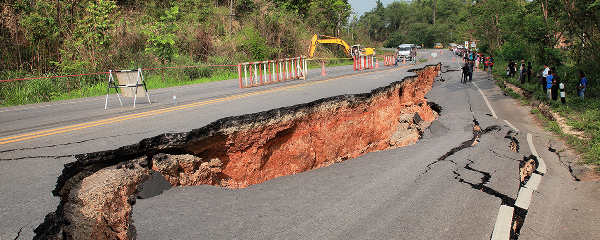
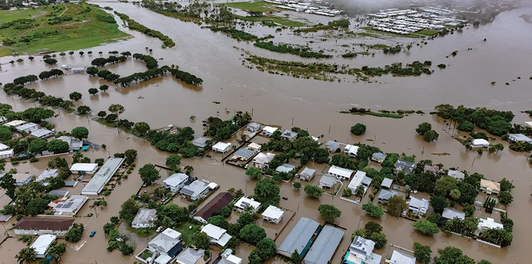
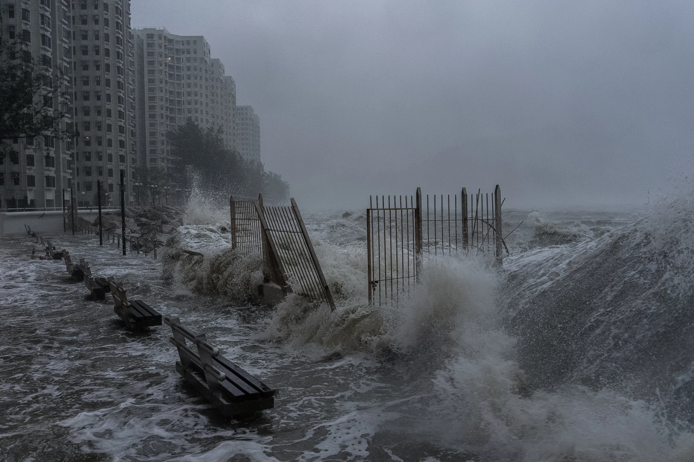
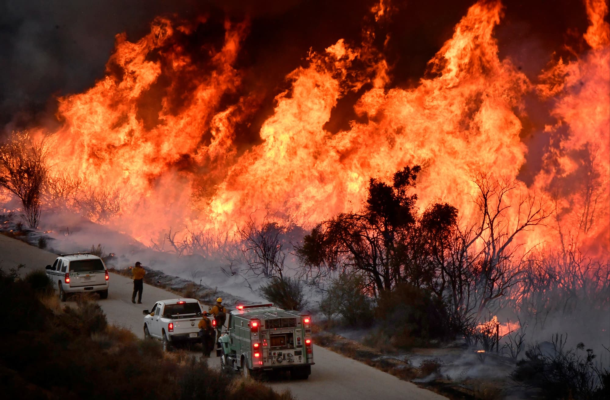

Earthquake Guide
An earthquake is a sudden and rapid shaking of the ground caused by the movement of rocks beneath the Earth's surface. It usually occurs due to the collision or slipping of tectonic plates along fault lines. Earthquakes can lead to structural damage, landslides, fires, and tsunamis. (Sources: DOST-PHIVOLCS, Michigan Technological University, USGS.gov)
Before an Earthquake (Preparedness)
Prepare an Emergency Kit: Include water, food, flashlight, radio, first aid kit, and whistle.
Secure Your Home: Anchor heavy furniture like cabinets and bookshelves to walls to prevent them from toppling.
Identify Safe Spots: Know the safe areas in your home, school, or office (e.g., under sturdy tables).
Practice Drills: Participate in earthquake drills regularly.
alert During an Earthquake
DROP, COVER, AND HOLD ON:
Drop: Get down on your hands and knees.
Cover: Protect your head and neck under a sturdy table or desk.
Hold: Hold onto the table legs until the shaking stops.
If indoors:
Do not run outside during shaking.
Stay away from windows, glass, and heavy objects.
If outdoors:
Move to an open area away from buildings, trees, power poles, and wires.
If in a vehicle:
Stop safely on the side of the road.
Stay inside the vehicle.
Avoid bridges and power lines.
After an Earthquake
Check Yourself and Others: Look for injuries and provide first aid if needed.
Be Careful of Aftershocks: Expect smaller tremors that can damage weakened structures.
Inspect for Damage: Check for gas leaks, electrical damage, or water line breaks.
If you smell gas, open windows and evacuate immediately.
Evacuate Safely: Use stairs, not elevators, if leaving a building.
Tsunami Warning: If near the coast, move away from the shore immediately after shaking stops.

Flood Guide
A flood is the overflow of water that covers land that is normally dry. It can be caused by heavy rainfall, overflowing rivers, storm surges during typhoons, or damaged dams. Floods can damage homes, roads, and crops and may cause injuries, water contamination, and disease outbreaks.
Before a Flood (Preparedness)
Prepare an Emergency Kit: Include drinking water, non-perishable food, flashlight, batteries, first aid kit, medicines, and important documents in waterproof bags.
Know Your Area: Be aware if your home is in a flood-prone area and identify the nearest evacuation centers.
Elevate Important Items: Place appliances, furniture, and electrical outlets above possible flood levels.
Monitor Weather Updates: Listen to local news or weather advisories for warnings.
Plan an Evacuation Route: Know safe routes to higher ground.
alert During a Flood
Move to Higher Ground Immediately: Do not wait for water levels to rise.
Avoid Floodwaters: Never walk, swim, or drive through floodwater. Even shallow water can be dangerous.
Turn Off Electricity: If safe to do so, switch off electricity and gas to prevent accidents.
Follow Authorities Instructions: Evacuate if local officials advise you to do so.
Stay Away from Rivers and Drains: Fast-moving water can sweep people away.
After a Flood
Return Home Only When It Is Safe: Wait for official announcements.
Avoid Contaminated Water: Floodwater may contain sewage, chemicals, or debris.
Check for Damage: Inspect your house for structural damage before entering.
Clean and Disinfect: Wash and disinfect everything that came into contact with floodwater.
Watch for Health Risks: Be alert for illnesses caused by contaminated water.

typhoon Guide
A typhoon is a powerful tropical storm that forms over warm ocean waters. It brings strong winds, heavy rainfall, flooding, and storm surges that can damage homes, infrastructure, and crops. Typhoons can also cause landslides and power outages, making preparation very important.
house Before a Typhoon (Preparedness)
Prepare an Emergency Kit: Include water, food, flashlight, batteries, first aid kit, medicines, and a portable radio.
Secure Your Home: Fix loose roofing materials and bring outdoor items like furniture, pots, and tools inside the house.
Check Weather Updates: Follow official weather advisories and warnings from local authorities.
Know Evacuation Areas: Identify nearby evacuation centers and safe routes.
Charge Devices: Make sure phones and power banks are fully charged.
alert During a Typhoon
Stay Indoors: Remain inside a strong building and away from windows and glass.
Avoid Flooded Areas: Do not walk or drive through flooded streets.
Turn Off Electricity if Needed: If flooding occurs, switch off electricity to prevent accidents.
Listen to Authorities: Follow instructions from local government and disaster response teams.
Prepare to Evacuate: If advised, move to a safe evacuation center immediately.
guidlines After a Typhoon
Wait for Official Clearance: Only go outside when authorities say it is safe.
Check for Damage: Inspect your home for structural damage, fallen power lines, or broken gas lines.
Avoid Floodwater: It may contain dangerous debris or contaminated water.
Help Others: Check on family members, neighbors, and especially the elderly or injured.
Stay Updated: Continue listening to news for updates and recovery information.

Fire Guide
A fire is the rapid burning of materials that produces heat, light, and smoke. Fires can start from electrical faults, unattended cooking, gas leaks, candles, or flammable materials. They can spread quickly and cause serious damage to homes, property, and lives if not controlled immediately.
house Before a Fire (Preparedness)
Install Smoke Alarms: Place smoke detectors in important areas of your home and check them regularly.
Prepare Fire Extinguishers: Keep a fire extinguisher in accessible places such as the kitchen.
Check Electrical Wiring: Avoid overloaded outlets and repair damaged wires.
Keep Flammable Materials Safe: Store gasoline, gas tanks, and other flammable items properly.
Plan an Escape Route: Make sure everyone in the household knows how to exit the house safely in case of fire.
alert During a Fire
Stay Calm and Evacuate Immediately: Leave the building as quickly and safely as possible.
Use the Stairs: Do not use elevators during a fire.
Stay Low: If there is smoke, crawl close to the ground where the air is cleaner.
Stop, Drop, and Roll: If your clothes catch fire, stop moving, drop to the ground, and roll to put out the flames.
Call Emergency Services: Contact the fire department once you are safe.
guidlines After a Fire
Do Not Re-enter the Building: Wait until firefighters say it is safe.
Check for Injuries: Give first aid or seek medical help if needed.
Inspect for Damage: Be careful of weakened structures and electrical hazards.
Report the Incident: Inform local authorities or emergency services about the fire.
Seek Assistance: Contact local disaster response agencies for help and recovery.